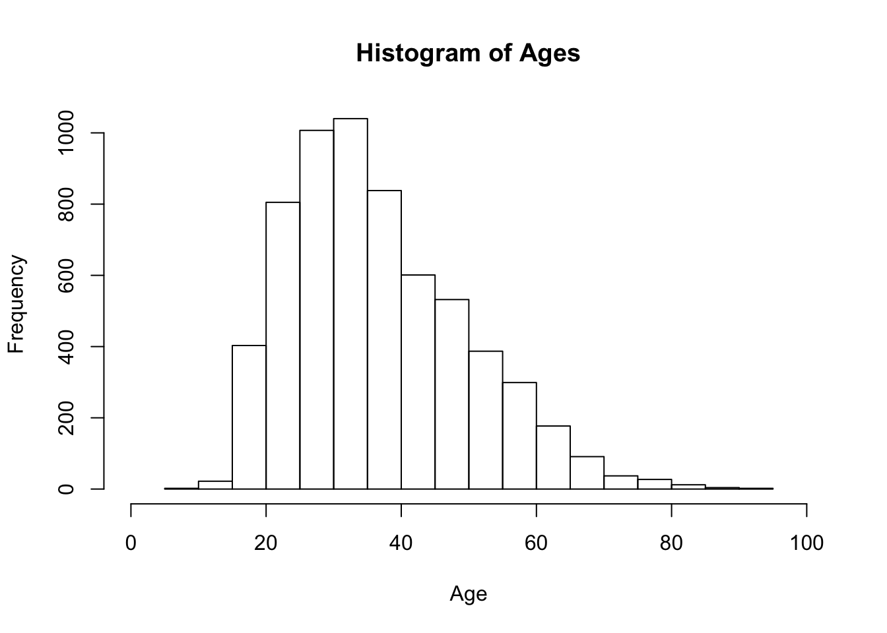
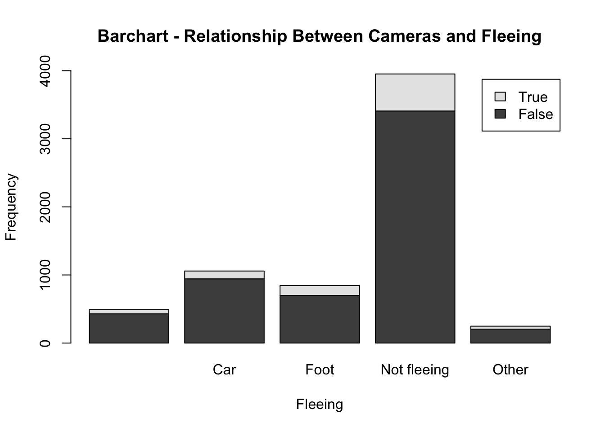

Create a folder in your computer (a good place would be under Crim 250, Exams).
Download the dataset from the Canvas website (fatal-police-shootings-data.csv) onto that folder, and save your Exam 1.Rmd file in the same folder.
Download the README.md file. This is the codebook.
Load the data into an R data frame.
# setwd("~/Desktop/Fall 2021/CRIM 250/Crim 250 - Exam 1")
shootings <- read.csv("fatal-police-shootings-data.csv")
shootings.untouched <- shootings
View(shootings)The Washington Post compiled this dataset from a variety of sources (ie. local news, social media, etc.), and it contains relevant information looking at fatal police shootings in the United States dating back to January 1, 2015. The data includes demographics about the victims, as well as information on where the shootings occurred and other details that might be interesting to examine in relation to the shooting.
dim(shootings)## [1] 6594 17There are 6,594 rows (number of fatal shootings) and 17 different columns, each containing information respective to the row.
names(shootings)## [1] "id" "name"
## [3] "date" "manner_of_death"
## [5] "armed" "age"
## [7] "gender" "race"
## [9] "city" "state"
## [11] "signs_of_mental_illness" "threat_level"
## [13] "flee" "body_camera"
## [15] "longitude" "latitude"
## [17] "is_geocoding_exact"According to the codebook, “body_camera” refers to whether or not the officer involved in the shooting was wearing a body camera that could have recorded parts of the shooting. The “flee” variable contains data on whether the victim was moving away from the officer during the incident. The “armed” column gives us information on whether the victim was armed, which might have influenced the officer’s decision to take action.
surprising_weapons <- table(unique(shootings$armed))
View(surprising_weapons)Three surprising weapons I found were interesting include the binoculars, microphone, and wasp spray.
hist(shootings$age,
main = "Histogram of Ages",
xlab = "Age",
ylab = "Frequency",
xlim = c(0,100))
This histogram, which shows the distributions of the victim’s ages, shows that the victims are mostly in their 30’s. This is overall not surprising, as the median age of adults in the US are roughly 38 years old, so it would make sense that this age range has the most number of victims, also by chance.
shootings$age[which(is.na(shootings$age))] <- 0
length(shootings$age[shootings$age == 0])## [1] 308mean(shootings$age)## [1] 35.38854median(shootings$age)## [1] 34This graph is right skewed which means that the mean is greater than the median which is greater than the mode. Because of this, I would probably look at the median, as this value will be the middle value and most accurate number. We can remove the missing values marked as “NA” in the dataset which will allow us to perform calculations on the data that is reported; there are only 308 missing values, and in a dataset with 6,594 observations, this should not disrupt the data too much. The median of the ages reported in the shootings comes out to be 34 years old, which makes sense when comparing this value to the histogram showing the distributions of the ages above.
summary(shootings$gender)## F M
## 3 293 6298There are disproportionately more males (6298 cases reported) reported to be fatal victims of police shootings than there are females (293 cases reported). This is not surprising to me, especially because I feel like I more often have heard of males getting shot by police. This has been reflected by the news, especially with all the Black men getting fatally shot by police officers.
length(which(shootings$body_camera == "True"))## [1] 910length(which(shootings$body_camera == "False"))## [1] 5684910+5684## [1] 6594(910/6594)*100## [1] 13.80042There were 910 police officers who reported wearing body cameras, compared to 5,684 officers who reported that they were not wearing cameras. This only equates to 13.8% roughly, which is a low proportion. This is also not surprised that this is so low, and some hypotheses challenge that body cameras are effective in decreasing police brutality; although, the studies looking at this are relatively inconclusive. The fact that there were some instances in this data, where the officer was wearing a body camera, and the victim was still fatally shot, shows that body cameras are not fully effective and killings will happen even when officers are wearing them.
summary(shootings$flee)## Car Foot Not fleeing Other
## 491 1058 845 3952 2481058+845## [1] 19031903/6594## [1] 0.2885957A total of 1,903 victims were reported to be fleeing, whether this is by car or by foot. This is roughly 28.9% of the victims in the dataset who were reported to be fleeing. This seems about accurate, or even slightly low, although my knowledge on specifics during police interactions is pretty limited.
Hint 1: The categories along the x-axis are the options for “flee”, each bar contains information about whether the police officer had a body camera (vertically), and the height along the y-axis shows the frequency of that category).
Hint 2: Also, if you are unsure about the syntax for barplot, run ?barplot in R and see some examples at the bottom of the documentation. This is usually a good way to look up the syntax of R code. You can also Google it.
tab.camflee <- table(shootings$body_camera, shootings$flee)
barplot(tab.camflee,
main = "Barchart - Relationship Between Cameras and Fleeing",
xlab = "Fleeing",
ylab = "Frequency",
legend.text = rownames(tab.camflee),
beside = FALSE,
ylim = c(0,4000))
This barchart shows the relationship between wearing a body camera and when the victims were fleeing. In terms of frequency, there were more officers wearing a body camera in the instances where the victim was not fleeing, but in terms of proportions, there were probably equal or even lesser number of officers wearing cameras when the victim was fleeing. Other than that, it is clear that in this dataset, officers were way more likely to not be wearing cameras across the board, no matter if the victim was fleeing or not.
Hint 1: The categories along the x-axis are the race categories and the height along the y-axis is age.
Hint 2: Also, if you are unsure about the syntax for boxplot, run ?boxplot in R and see some examples at the bottom of the documentation. This is usually a good way to look up the syntax of R code. You can also Google it.
Your answer here.
mydates <- as.Date(shootings$date)
head(mydates)
(mydates[length(mydates)] - mydates[1])The first line of code is changing the values in the date column and converting them to the character representation of how dates are in a calendar. This will allow us to manipulate the data in terms of date specific analysis, rather than having to treat it as the value that it is in the input stage. head(mydates) allows us to look at the first few values of the newly changed data. The last line of code allows us to look at the difference from where we are now, to the origin of the data, or the first date that was input.
I think there are many reasons why police killings would be mislabelled or underreported. There are many reasons why someone in the reporting process would want to change or withhold information in order to protect the officers involved in the shooting and the police force as a whole. I think it is important to take these factors into consideration when looking at any data that goes through the policing system, as there is a lot of personal incentive to not provide the whole truth, especially when police are under the microscope right now and some may feel the need to alter or not provide certain details in order to protect themselves.
summary(shootings$flee)## Car Foot Not fleeing Other
## 491 1058 845 3952 248summary(shootings$body_camera)## False True
## 5684 910There are missing values in the data we used for problem 4, specifically for the variable looking at victim fleeing. That is most likely not all the data that is missing from this dataset, as it is hard to compile complete information when looking at data like this. Overall, this dataset is pretty complete, and while it is always best practice to try to get as much information as possible, with such a large number of observations, missing data is not always the biggest deal. A lot of the times, you have to work with what you are provided with.